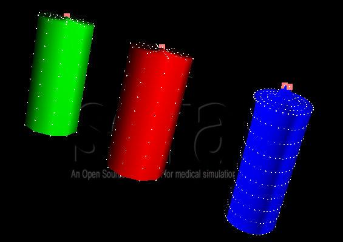

Topology Volume Different Mesh

Description
The aim of this tutorial is to show the different ways to create 3D volume mesh topologies. In this tutorial, three cylinders are represented, implying:
There are three possible ways to build a 3D volume mesh using the following components. These components are extensions of the ones explained in the Tutorial Topology Linear Different Mesh.
Thus, when simulated, the three models will fall due to gravity. A different behavior can be noticed for the regular grid near the fixed points due to the different topology elements used (hexahedra versus tetrahedra).
Note that it is possible to change the behavior for the regular grid, using a topological mapping. See TutorialTopologyHexa2TetraTopologicalMapping.

- A mesh loader to read mesh file. (not necessary in regular mesh)
- A mechanicalObject with geometry point positions.
- A mass for gravity and fixed points.
- A FEM forcefield to create interactions between points
- An ODE scheme and a linear solver to solve the system at each time step.
- A topological component.
- A visual model which reproduces the current model geometry thanks to the identity mapping.
Key points
There are three possible ways to build a 3D volume mesh using the following components. These components are extensions of the ones explained in the Tutorial Topology Linear Different Mesh.
- MeshTopology creates a static mesh. Here there are tetrahedra, triangles and edges, using a mesh file. But no modifications are possible.
- CylinderGridTopology creates a regular mesh. Here there are regular hexahedra. No mesh file is needed, using only boundaries and the scaling. CylinderGridTopology is an extension of the RegularGridTopology which would create a cube in this case.
- TriangleSetTopologyContainer creates a dynamic mesh. Here there are tetrahedra, triangles and edges, using a mesh file. Other classes can be added to perform topological operations. Classes are TetrahedronSetTopologyModifier (for unitary operation), TetrahedronSetTopologyAlgorithms (for more complex topological operations) and TetrahedronSetGeometryAlgorithms (to couple topology algorithms and geometry positions).
Results
Thus, when simulated, the three models will fall due to gravity. A different behavior can be noticed for the regular grid near the fixed points due to the different topology elements used (hexahedra versus tetrahedra).
Note that it is possible to change the behavior for the regular grid, using a topological mapping. See TutorialTopologyHexa2TetraTopologicalMapping.